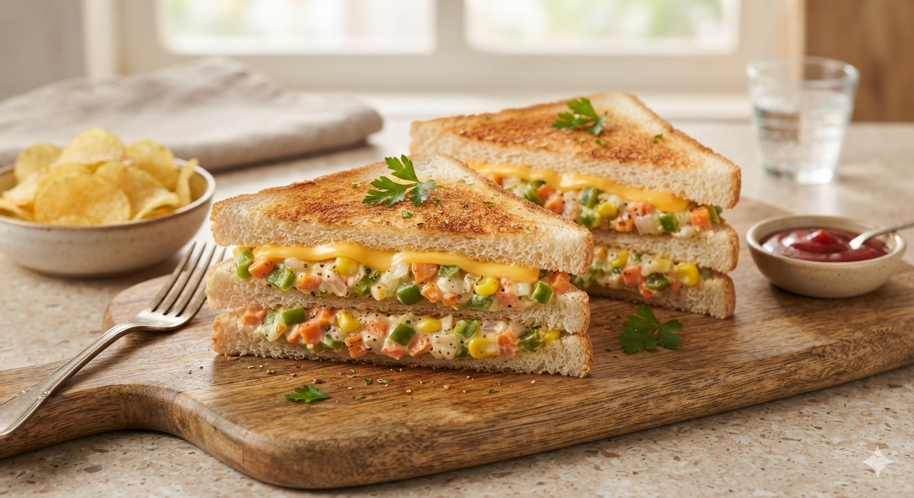

Home
CREAMY VEG MAYO & CHEESE SANDWICH

Description
The Creamy Veg Mayo & Cheese Sandwich is a classic cafe-style comfort food featuring a golden, buttery-crisp exterior and a rich, molten interior. It combines a vibrant mix of crunchy, finely diced vegetables bound together by a velvety, seasoned mayonnaise dressing. Enhanced with aromatic Italian herbs and gooey melted cheese, it delivers a perfect balance of textures in every bite. Because it requires zero advanced cooking, it serves as a quick and highly satisfying meal for busy mornings or snack times.
Ingredients
- Mayonnaise: 1/4 cup
- Capsicum (Bell Pepper): 1/4 cup, finely chopped
- Onion: 1/4 cup, finely chopped
- Carrot: 1/4 cup, grated or finely chopped
- Sweet Corn: 2 tbsp, boiled
- Black Pepper Powder: 1/2 tsp, freshly crushed
- Mixed Italian Herbs / Oregano: 1/2 tsp
- Chilli Flakes: 1/2 tsp
- Salt: To taste
- Bread Slices: 4 pieces (white, whole wheat, or sandwich bread)
- Butter: 1–2 tbsp, softened
- Cheese Slices or Grated Mozzarella/Cheddar: 2 slices
Steps
- Mix the Filling: In a medium mixing bowl, combine the finely chopped capsicum, onion, carrot, and boiled sweet corn. Add the mayonnaise, black pepper powder, mixed herbs, chilli flakes, and a pinch of salt. Mix thoroughly until the vegetables are evenly coated in a creamy dressing.
- Prep the Bread: Lay out the 4 bread slices. Lightly spread softened butter across one side of each slice.
- Spread the Filling: Divide the creamy veggie-mayo mixture equally onto two of the bread slices, spreading it to the edges.
- Add Cheese: Place a cheese slice (or a generous handful of grated cheese) directly on top of the creamy veggie layer.
- Assemble: Top with the remaining two slices of bread, buttered-side facing out.
- Toast to Golden Crisp: Heat a skillet (tawa) or sandwich maker over medium heat. Place the sandwiches down and toast for 2–3 minutes per side until the bread turns golden brown and crispy, and the cheese inside melts perfectly.
- Serve: Cut diagonally into halves and serve hot alongside potato chips or tomato ketchup.